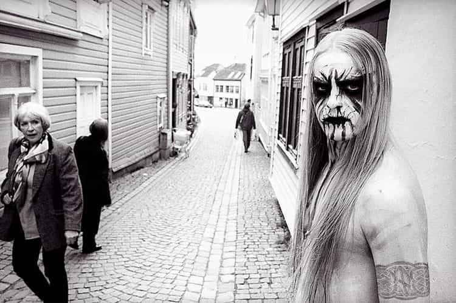
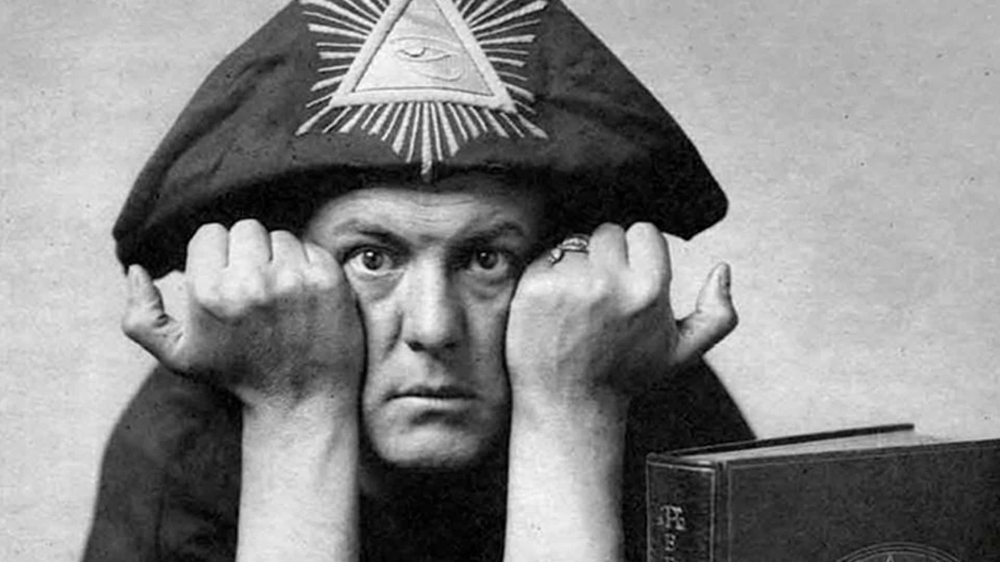

Kyle is a citizen of the Old World where he spends his days seeking the truth to be found in ancient philosophy, traditional literature and contemporary violent music. A seeker of peak performance of mind and muscle.


Amongst the relentless and often hyperbolic calls to pinpoint the genesis of the stale feeling of the half-century-old ‘extreme’ genre, I propose something different here and something I’m sure I’m going to be outnumbered by the number of people who will disagree with me.
Metal defies the genre that defined it. It is much more than simply a couple of blokes standing around playing live music featuring themes of Satan worship, womanising or drug use. It is an expression of the dirtiest of subcultures, those who are truly lost amongst the groupings that befall a modern society. It is no secret that ‘the metal community’ has attracted people together purely based on a vague agreement in music they like, but at the expensive of all other interests, values or opinions.
Today, we see a community that will oust the fringe whose ideas began it for being too extreme, controversial or offensive. For now, I feel it has betrayed what it initially was with this regressive open-armed approach to inclusivity.

With the perpetually shifting of the Overton window, some topics that were once controversial can now be discussed on mid-morning television programs where others are now outright banned from even the thought of contemplation, let alone discussion.
If you define the genre of metal as merely that combination of instruments earlier proposed then you needn’t worry – as this will continue eternally. The stagnant flesh that hangs off those tired bones will continue for as long as modern-day ‘rebellion’ can be depicted as doing what your parents didn’t. The rise of newer bands on the outskirts of metal – such as Greta Van Fleet -will attract grandparents and their grandchildren, missing out on the parents who chose genres other than those that contained Led Zeppelin or Black Sabbath.
Instead, the beckoning call that I have always felt for was for those earlier years, and those are the records I always default return to, where audiences were genuinely scared at the sights and sounds they were experiencing, the freshest output being in the early 90s with Norwegian Black Metal.
Before Ozzy Osbourne became a meme thanks to $auron Osbourne & MTV, fans of his and of his boys from Birmingham were legitimately terrified of John where the potential for something truly threatening was always present.
Later, symbols of anarchy such as Johnny Rotten left the youth of Britain terrified that he may actually be hiding under the bed. Fights and violence were never far from a good ‘music’ show. The mystique and intrigue that surrounded even earlier bands such as Zeppelin would be destroyed through the modern way to enjoy music and it’s creators.
An entire mythos was created around Jimmy Page, the Occult and his fascination with Crowley. Today, music journalists would be requesting his latest opinion on Brexit, Trump, or any other mindless distraction that keeps ancient and decrepit publications in circulation.

Metal now focuses on inclusivity – that everyone should feel safe in a home that has been created for the homeless. When you’ve nowhere to go, metal fans will happily take you in. It ignores that you might not actually like anything that’s of any stern use. Blink 182 & Green Day? In this paper-thin world, those bands have has much use for tender as fans of Burzum or Witchfinder General.
The value has been betrayed. You are more likely to find the values within other genres that have yet to face this parasitic infestation. True country and electronic music are making big gains where metal has long abandoned the interest of its brothers. This must be stopped.
The message of true strength, true suffering and the strength to be found within the suffering have been replaced by plastic and disposable emotions for a plastic and disposable world. Where safety is the culture’s only capability, any danger must be stamped out as quick as a spark is produced.
The myth of the binary black or white and good or bad mindset leaves little room for any real acts of rebellion where attempts to do so will face threats of the law, doxing and hurt to one’s family as the outcome. Coming back from a show with a mouth full of blood or the missing of a few teeth is as ancient as listening to the music in a mono output. Instead, the floor is flooded with ‘men’ weighing six stone ringing wet and Disney neck tattoos.
I’ve always believed music to be a solo enjoyment and although I enjoy a live show (performer and pedestrian), nothing can get me closer to the experience of the message that being on my own in a dark room with headphones on. It is there where I now retreat to be truly terrified. To clear myself of the distraction, of the bright lights and weak drunken fools who only know a state of being an extreme extrovert to keep the distance as far as possible from their true thoughts, dreams and fears.
Join me. Grab a Robert Johnson discography CD, smoke a cigarette with Sinatra, put a spell on Screamin’ Jay Hawkins, dance to the radio with Ian Watkins, take a soulside journey with Darkthrone. Take what you find into the real world.
There is still time to be you.
Read More: 4 Steps We Must Take To Fix Society